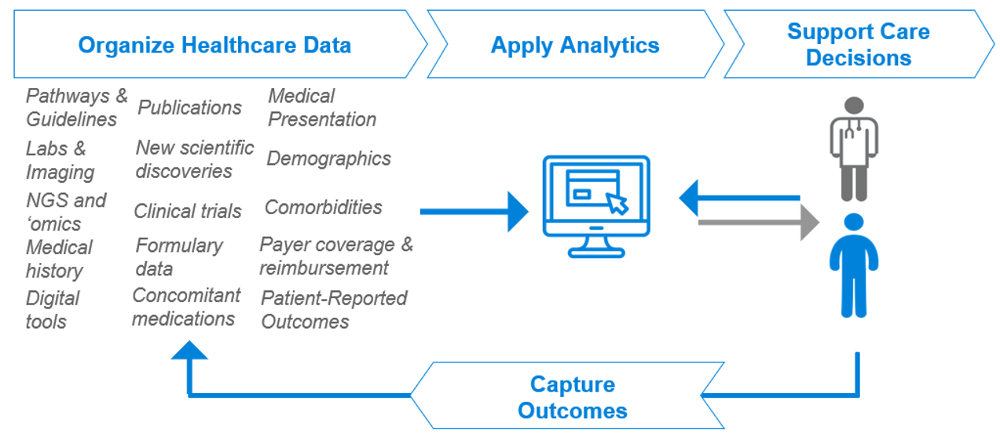
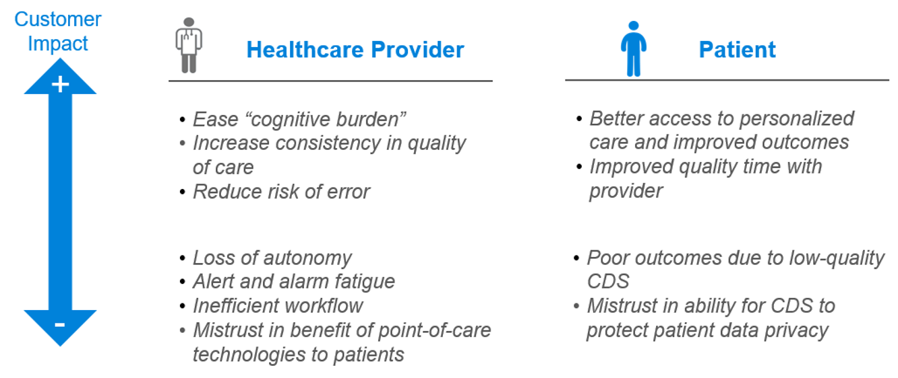
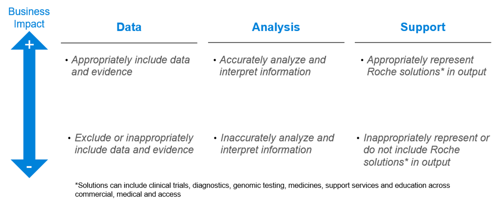

Clinical Decision Support (CDS)

Description
Increased volumes of healthcare data are now available to both HCPs and patients1,2 This overwhelming growth in healthcare data is making clinical decisions more complex. High-quality Clinical Decision Support (CDS) leverages objective health data and analytics to improve individual patient outcomes by enabling more confident clinical decisions in real time at the point of care. Most CDS solution are currently in Oncology, followed by Neuroscience and Ophthalmology—all areas of interest for Roche. 1,4
 Click button below to see:Why it is important & connection to our PHC vision and strategy (see PHC vision & strategy diagram on the left)
Improved access & personalized care - CDS systems have the potential to improve both healthcare provider and patient experiences.1
CDS will also impact pharmaceutical industries by influencing how products are represented at the time of clinical decision making.
Roche and Roche partner examples/initiatives
At Roche Pharma, our vision is that high-quality CDS improves individual patient outcomes by supporting personalized clinical decisions at the point of care.1
Roche’s Global Pharma CDS strategy was developed to ensure that CDS systems are high quality and that we are prepared to operate in an environment where CDS has significant influence on clinical care. 1
For example, Navify® Tumor Board is a Clinical Decision Support product from Roche. It is a cloud-based workflow product that securely integrates and displays relevant aggregated data into a single, holistic patient dashboard for oncology care teams to review, align and decide on the optimal treatment for the patient.2
Key drivers/considerations
Where CDS Fit Within PHC
Healthcare systems
Policy makers
Considerations
clinical workflow
access acceptance
for high-quality CDS
high-quality CDS